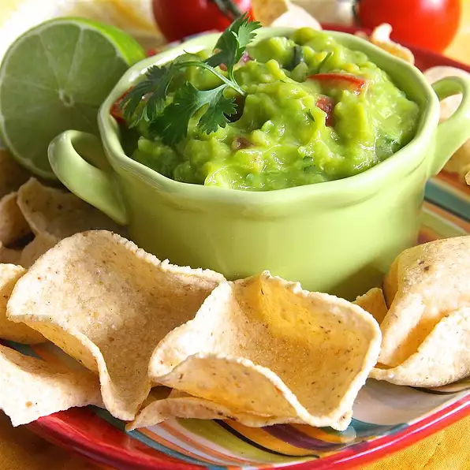

Creamy avocados, onion and diced tomatoes combine to make the best dip for tortilla chips! This guacamole is
also good as a condiment for sandwiches.
Ingredients
- 2 avocados from Mexico, peeled, pitted and diced
- 2 Roma tomatoes, seeded and diced
- 4 tablespoons finely diced onion
- 3 cloves garlic, minced
- ½ lime, juiced
- ½ teaspoon salt, or to taste
Directions
-
Combine avocados, tomatoes, onion, garlic and lime juice. Stir well, mashing but leaving some chunks of
avocado. Season with salt; stir to combine.
-
Serve immediately or chill for 30 minutes.